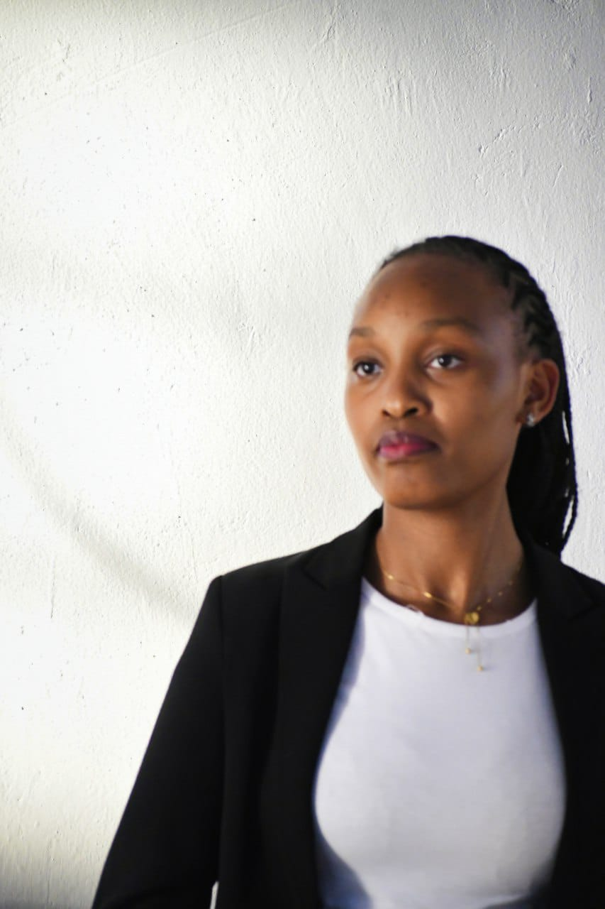

Quality
We believe in serving excellent coffee and fresh food. We carefully select our ingredients to give our customers a memorable experience.
At Savanna Brew Café, we believe that coffee is more than just a drink. It is an experience that brings people together.

Savanna Brew Café was founded in 2019 by Janice Lavoga. Growing up on her grandparents' coffee farm in Nyeri, Amina developed a deep appreciation for coffee and the people who grow it.
Inspired by her childhood experiences, she decided to create a welcoming café where people could enjoy quality Kenyan coffee, freshly baked pastries and good company.
Today, we proudly source coffee from local farmers in Nyeri and Kiambu. Every cup we serve represents our love for Kenyan coffee and our commitment to supporting local communities.
Everything we do at Savanna Brew Café is guided by three important values.
We believe in serving excellent coffee and fresh food. We carefully select our ingredients to give our customers a memorable experience.
We support local coffee farmers and believe in creating a welcoming space where people can connect, share ideas and build friendships.
We care about the environment. We encourage responsible practices and use eco-friendly packaging to reduce waste.
We believe a café should be more than a place to grab a cup of coffee. It should be a place where people feel welcome, conversations happen and memories are made.
"Great coffee brings people together, but great communities make those moments special."
We look forward to welcoming you to Savanna Brew Café.
Visit Us Today